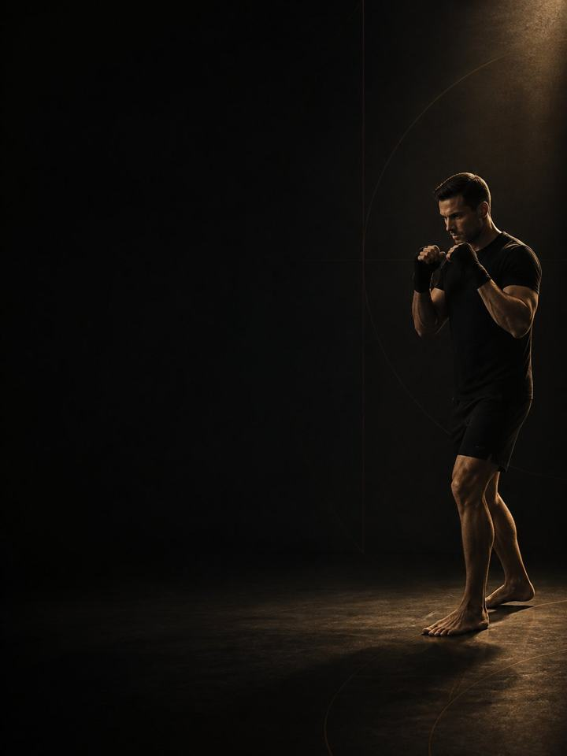

Striking · Restore
A real break after the fight, then an unhurried rebuild of the shoulders, calves, hands and neck that camp wore down.
- Built forboxing, Muay Thai and MMA athletes after their last fight
- Training days2 weeks off, then 2–3 gym days a week with no sparring
- Session length53–60 minutes
- Equipmentfull gym, plus a med ball, bands and a pull-up bar
- Formatmobile PDF, every exercise linked to a demo video
- Get all four blocks of this sport family for 119.990 KD (159.960 KD if bought separately).
- Upgrade to 1:1 coaching within 30 days and this price comes off your first month.
The store opens soon. For now, Buy opens an Instagram message and you receive the PDF there.
Who it's for
Strikers whose fight is over. The first two weeks of this block prescribe almost nothing, and no sparring at all, and that is the most important part of the program. Fighters find this harder than almost any other athletes, because the gym is a social life as much as a job and the urge to be back in on Monday is strong.
But camp leaves debts nothing else in the year pays off: a shoulder that has held a guard for twelve weeks, calves and Achilles that have lived on the balls of the feet, hands and wrists that have taken thousands of impacts, and a neck that has absorbed everything sparring sent at it. After the break comes the rebuild: higher reps, moderate loads, the weaker side trained first, and every niggle you fought through dealt with while nothing is booked.
If there was any head contact in your last fight or camp, no sparring until a clinician clears you, however good you feel. That is not a training decision.
Where it sits in the year: Block 4 of 4. Base, Build, Compete, Restore, run in order. Run it straight after your last fight. Then the year starts again at Base.
Your week
Weeks 1–2 have no sparring, no structured training and no gym. Walk, swim, ride, play something else. From week 3 the gym leads. This is the only block of the year where strength work is the main event and sport volume is rebuilt around it.
Off-camp week, 3 gym days
| Sun | Mon | Tue | Wed | Thu | Fri | Sat |
|---|---|---|---|---|---|---|
| Day 1 | Easy | Day 2 | Rest | Day 3 | Easy | Rest |
Two-day version
| Sun | Mon | Tue | Wed | Thu | Fri | Sat |
|---|---|---|---|---|---|---|
| Day 1 | Easy | Rest | Day 2 | Easy | Rest | Rest |
Every session runs the same way:
- Warm-up, 8–10 min. The same sequence each time, plus wrists and neck. Unhurried, because nothing is booked.
- Main lifts, 25–30 min. Higher reps than the rest of the year, moderate loads, full range.
- Single-side and imbalance work, 10 min. Weaker side first, with an extra set until it matches.
- Shoulders, neck and calves, 10 min. Last, and never cut.
These are the longest sessions of your year, because for once they are not competing with sparring for your recovery.
How the 12 weeks progress
Three phases. Short breaks cost far less than fighters fear. Two weeks without training produces only a small drop in fitness that comes back quickly, while the tissues that took a full camp of repeated loading need exactly that unloading to reset. Strength fades more slowly still, which is why the rebuild from week 3 comes back fast.
Two other things belong here and nowhere else. Side-to-side gaps widen across a camp, because every fighter has a stance and trains it far more than the other side, and those gaps close fastest when nothing is being protected. And going back to sparring after head contact is a medical question with established clinical protocols behind it, not something to decide by how you feel on the day.
| Weeks 1–2 | Weeks 3–8 | Weeks 9–12 | |
|---|---|---|---|
| Phase | Tissue recovery | Structural capacity | Force production |
| Goal | Let joint and connective tissue recover after camp. No sparring, no structure. | Rebuild muscle, joint range and left-right balance. Higher reps, moderate loads, full range. | Rebuild maximal strength. Reps fall, loads climb, and power work comes back gently. |
| Gym days per week | none prescribed | 3 | 2 |
| Working sets per week | almost none | 48 | 34 |
| Average effort | rest | RPE 6.1, about 4 reps in reserve | RPE 7.1, about 3 reps in reserve |
| Landings per week | almost none | 60 | 40 |
| Throws per week | 0 | 0 | 48 |
The block at a glance
Working sets per week, by what they train. The dashed line is effort.
Where this block sits in the training year
Run the four blocks in order and they make a full training year.
RPE is a 1–10 rating of how hard a set feels. Reps in reserve is how many more good reps you could have done, so about 3 means 3 reps left in the tank.
Reps are higher and loads lower than anywhere else in the year, because this block is about tissue quality, range and balance, not force. By week 12 the loads are close to where Striking Base takes over.
Deload: week 12 is lighter, and you retest in it. Those numbers are where the next year begins.
The rules that make it work
- The first two weeks are the program. No sparring, no gym, no structure. Two weeks costs a small, quickly recovered amount of fitness and repays a full camp of tissue debt.
- No sparring after head contact until a clinician clears you. It is a medical decision with established protocols behind it. No exceptions.
- Rebuild the gym before the rounds. Strength leads in this block. Sparring and sport volume come back underneath it, gradually.
- Weaker side first, extra set. Every fighter has a stance and trains it more. The gaps widen across camp and close fastest here.
- Fix the lingering aches now. Shoulders, hands, wrists, calves: anything you fought through gets addressed here, alongside the matching AXIS corrective program.
- Use a jump number as a fatigue test. Three standing broad jumps at the start of Day 1 each week, best one kept. More than 10% below your own rolling average means reduce that day: drop the power work and one set from each lift.
Terms
- Training year (macrocycle): four blocks in order (Base, Build, Compete, Restore), about 48 weeks.
- Block: 12 weeks. This program. One block develops one set of qualities to a set standard.
- Phase (mesocycle): a run of weeks that targets one quality. Here the phases are 2, 6 and 4 weeks long, because the length follows the goal.
- Training week (microcycle): where effort climbs, sets are added and the deload lands.
How you'll measure progress
The program starts in week 3, and so does the first retest. You retest again in week 12.
What good progress looks like
- Weeks 1–2: you will feel like you are falling apart and losing everything. You are not. Two weeks costs a fraction of what an unpaid camp does.
- Weeks 3–8: strength returns faster than it was built, the shoulder number climbs quickly, and the side-to-side gaps close.
- Weeks 9–12: loads approach where Striking Base will pick them up, and sport volume is back to normal.
The best sign this block worked is starting Base with no lingering aches, no side-to-side gap and a neck that tests clean.
Respect the week
Count everything: sport training, gym and sleep. Sudden jumps in weekly workload are the most reliable predictor of injury in amateur sport. As sport volume comes back, add it gradually. Protect 7–9 hours of sleep. It is the most powerful performance tool you have, and the cheapest.
The science
Every program in the library is built on published research, and how strong that research is gets stated, not implied. Where the evidence is limited, the page says so.
| Finding | Source | What it does not show |
|---|---|---|
| Strength training cuts sports injuries to under a third of the control rate. Stretching does not reduce them. | Lauersen, Bertelsen & Andersen, British Journal of Sports Medicine 2014. Meta-analysis of 25 randomised controlled trials, 26,610 participants. PMID 24100287 | Risk ratio 0.32 for strength training and 0.96 for stretching. The trials varied a lot, and dose was not standardised. |
| Every sensible prescription beats not training. Heavier loads rank highest for strength. Multiple sets rank highest for muscle size. | Currier, McLeod, Banfield et al., British Journal of Sports Medicine 2023. Network meta-analysis, 178 strength and 119 hypertrophy studies. PMID 37414459 | The differences between prescriptions were small, and all of them worked. |
| Muscle growth increases with weekly sets per muscle, in a graded dose-response. | Schoenfeld, Ogborn & Krieger, Journal of Sports Sciences 2017. Meta-regression, 15 studies, 34 treatment groups. PMID 27433992 | About 0.37% more growth per added weekly set. The effect is graded, not unlimited, and studies rarely go beyond 10 or more sets. |
What's next
After 12 weeks:
- Start the next year: Striking · Base
- Shoulder still talking: Shoulder & Scapular
- Hands or wrists still talking: Elbow & Wrist Pain
- Calves or Achilles still talking: Ankle & Foot Pain
Want it built around you? One-to-one coaching through the Trainerize app: programming shaped by your goal, schedule and history, video review of your technique, and weekly adjustments. Seats are limited. DM @a_bouzubar with "COACHING".
Before you buy: get cleared first if
- You have chest pain, unusual breathlessness, palpitations or dizziness with exertion.
- You have uncontrolled high blood pressure, a known heart condition, or recent surgery.
- You are pregnant or recently post-partum. Get clearance and a tailored program first.
- You have sharp joint pain in one spot that won't settle. Start with the matching AXIS corrective program.
This program is general fitness guidance. It does not replace a medical assessment.
- Get all four blocks of this sport family for 119.990 KD (159.960 KD if bought separately).
- Upgrade to 1:1 coaching within 30 days and this price comes off your first month.
The store opens soon. For now, Buy opens an Instagram message and you receive the PDF there.